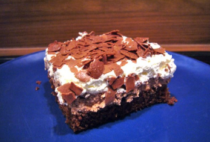

Nutellaschnitten
| Kuchenboden |
| Eier |
6 Stück |
| Kristallzucker |
250 g |
| Öl |
1/8 l |
| Kakao |
2 EL |
| Mehl |
200 g |
| Backpulver |
1 Pkg |
| Creme |
| Patisseriecreme |
1 l |
| Nutella |
250 g |
| Zusätzlich |
| Marillenmarmelade |
50 g |
| Schokoflocken |
3/4 Pkg |
Kuchenboden
- Eier trennen
- Dotter und Zucker etwa 5 Minuten schaumig rühren
- zuerst Öl, anschließend 1/8 l lauwarmes Wasser nach und nach unterrühren
- Masse nochmals etwa 5 Minuten schaumig rühre
- Kakao untermengen
- Mehl mit Backpulver versieben und unterrühren
- Eiklar steif schlagen und unterheben
Masse auf ein befettetes und bemehltes Backblech (38 cm x 32 cm) streichen und
im vorgeheizten Rohr auf mittlerer Schiene bei 170°C etwa 20 Minuten backen.
Auskühlen lassen und mit Marmelade bestreichen.
Creme
- Patisseriecreme mit dem Handrührgerät etwa 1/2 Minute aufschlagen
- Masse halbieren
- Nutella unter eine Hälfte rühren
- auf dem Kuchen glatt streichen
- restliche Creme darauf verteilen
- mit Schokoflocken bestreuen
- kalt stellen
So könnte das ganze dann ausschauen.

Bei CHEFKOCH oder Gute Küche gibt's auch viele Rezepte.